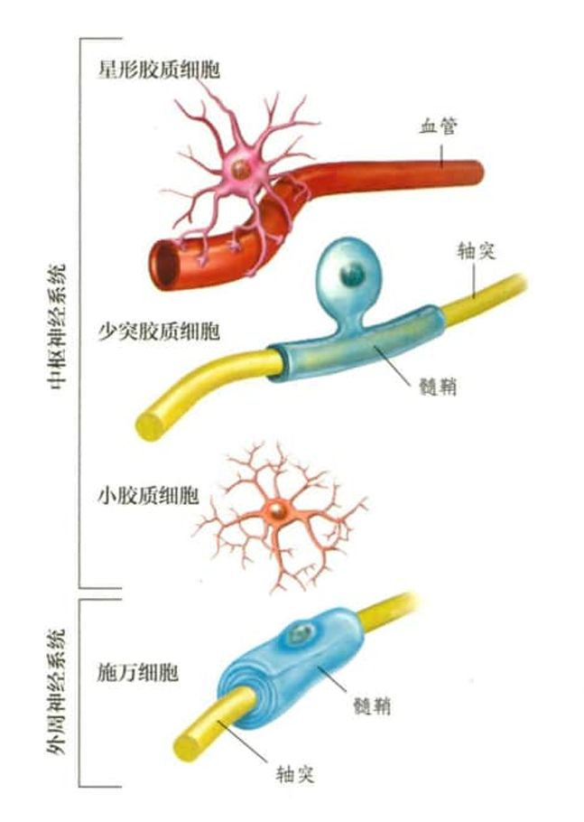
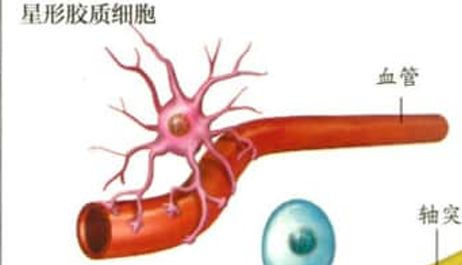
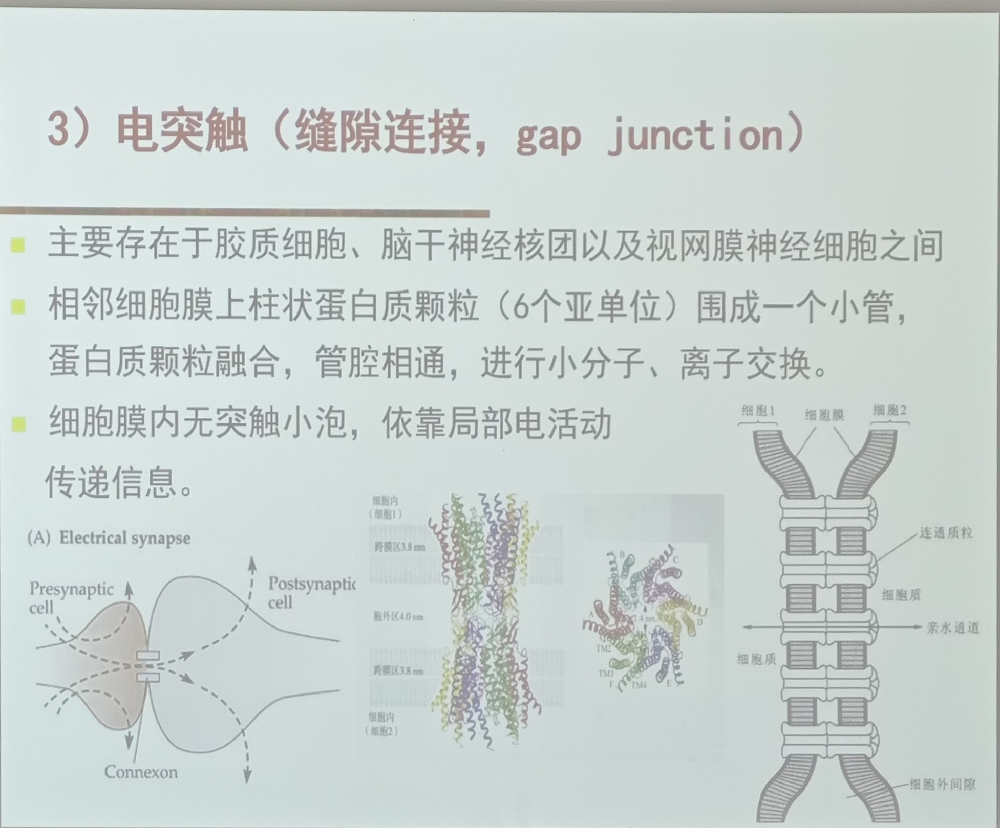
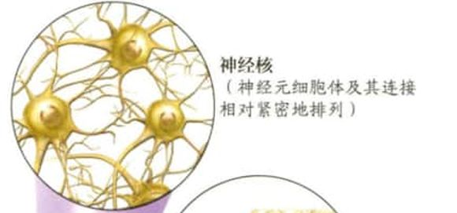
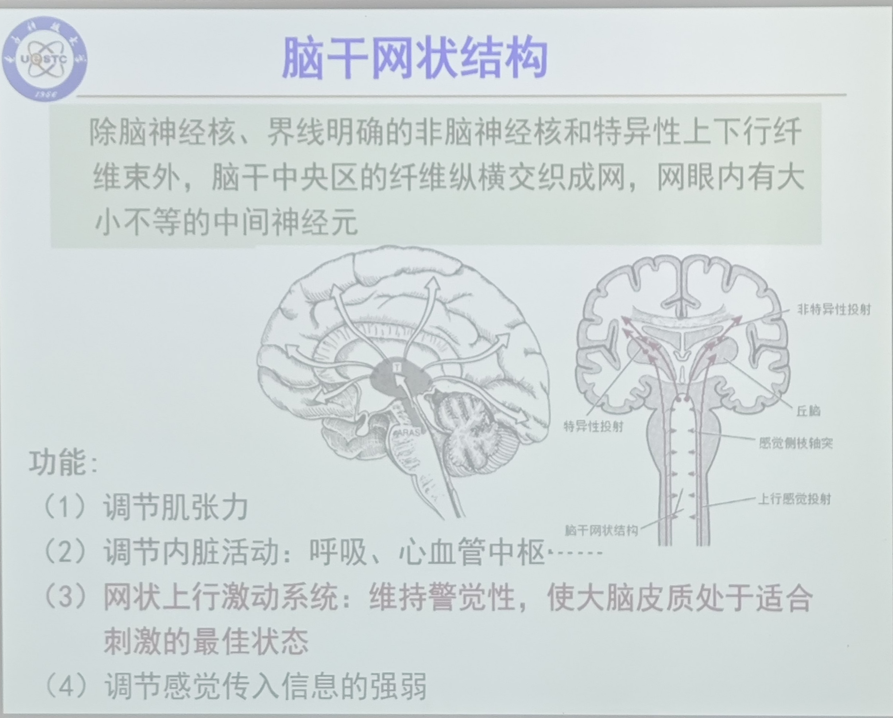

多通道联合皮质的作用
- 接受和整合来自许多皮质区域的输入（p59）
- 负责所有的高级人类能力，如语言抽象思维，设计跑车
为什么需要多通道联合皮质对单通道联合皮质的信息进一步加工
没有其他模式的信息，单通道联合皮质没有能力将感知到的信息与其他的体验联系起来，完成更高级的任务，比如人脸识别
突触修剪
连接神经元的一些突触随着发育而被删除的现象
大型神经网络包括
- 左半球语言网路
- 右半球空间注意网络
- 面孔/物体网络
- 认知控制网络
- 默认网络
单通道联合区之间没有连接的原因
保证了感觉经验的可靠性，并延迟了来自其他感官的交叉污染
形成髓鞘的胶质细胞
中枢神经系统：少突胶质细胞
外周神经系统：施万细胞
由于神经元细胞膜上的电压门控离子通道的存在，动作电位能够自我再生
为什么树突到轴突末端的信号会衰减？
因为兴奋性突触后电位产生的小电流随着距离增加而衰减。
神经元如何解决衰减传导问题？
通过动作电位再生信号，避免衰减。
被动电流传导的特点是什么？
也称为电紧张性传导，信号强度随距离增加而衰减。
被动电流在神经元内的最大传导距离是多少？
约 1 毫米。
绝对不应期是什么？
动作电位后短暂时间，钠通道失活，无法产生新动作电位。
跳跃式传导是什么？
在有髓轴突中，动作电位仅在郎飞氏节处发生，信号跳跃传播。
霍奇金-赫胥黎循环是什么？
由 Na⁺ 通道开放引发更多 Na⁺ 内流的正反馈循环。
细胞膜的选择通透性的作用
作为细胞内部稳态的一部分，维持内部化学稳定性
门控离子通道
通透性可变的离子通道,对应非门控离子通道
开启或关闭受附近跨膜电压变化或对化学或物理刺激响应
离子泵
消耗atp,逆浓度梯度主动运输离子的蛋白质
动作电位如何产生？
当膜去极化达到阈值时，钠离子通道开放，引发动作电位。
髓鞘如何加速动作电位的传递？
髓鞘减少电压损失，使动作电位通过郎飞氏节跳跃式传导。
基线放电率由什么决定？
神经元的固有特性或局部神经网络活动。
兴奋性突触后电位如何被记录？
通过电极记录神经元群的同步电信号活动。
脑电图（EEG）是什么？
记录大脑皮层或头皮上的电信号，反映神经元群的活动状态。
髓鞘的作用是什么？
使动作电位沿轴突快速传递并延长传递距离。
静息电位是什么？
神经元膜上的电位差，静息时神经元膜的电压差。
脑电图中的振荡信号是如何产生的？
由突触后电位引起的动作电位产生。
血脑屏障的作用
血脑屏障限制亲水分子和微小物体（绝大多数细菌）扩散，允许小的疏水分子扩散。
保护中枢神经系统免受化学物质和病原体等血液传播物质的侵害
神经元如何接收信号？
通过树突接收兴奋性突触后电位。
什么是绝对不应期？
在此期间，神经元无法产生新的动作电位。
什么是相对不应期？
神经元在此期间只能通过强于正常的刺激产生动作电位。
神经元如何克服被动电流的衰减？
通过动作电位再生信号，使其能传播更远。
动作电位是什么？
离子通道的开放和关闭引起神经元膜上的一小块区域快速去极化和复极化，这个过程便叫作动作电位.
动作电位去极化的离子机制是什么？
钠离子（Na⁺）通道开放，Na⁺ 内流。
郎飞氏节的作用是什么？
使动作电位在髓鞘化轴突上以跳跃方式传播。
神经胶质细胞在神经元轴突周围形成什么结构？
鞘（髓鞘）。
动作电位是全或无的现象吗？
是的，动作电位的幅度不取决于去极化的大小，只要达到阈限。
动作电位的传播方式是什么？
通过电压门控离子通道的再生，信号不衰减。
胶质细胞的分类
胶质细胞分类：
- 中枢神经系统：星形胶质细胞、小胶质细胞、少突胶质细胞
- 外周神经系统：施万细胞

神经元与其他神经元之间的特殊通信结构是什么？
突触。
郎飞氏节的位置在哪里？
位于电压门控钠离子通道和钾离子通道的髓鞘之间。
动作电位的强度如何表示？
动作电位的振幅相同，刺激强度通过放电频率传递
动作电位复极化的离子机制是什么？
钾离子（K⁺）通道开放，K⁺ 外流。
刺激强度如何编码？
通过动作电位的放电频率（Hz）来表示，而非单个动作电位的大小。
神经元振荡是什么？
神经元群以特定频率同步活动，形成电信号波动。
突触后电位可以通过什么方式被测量？
通过位于一定距离的电极（如头皮）测量大量神经元的动作电位。
髓鞘的作用
作为电绝缘体，防止电流通过细胞膜时造成的损失，增加了信息沿着神经元传递的速度和距离
离子通道
一种中间有孔的蛋白质，允许某些离子沿着电化学和浓度梯度向下流动
钠钾泵每水解一个三磷酸腺苷分子产生的能量可以将3个Na+移出细胞，将2个K+移入细胞
动作电位的传播特点是什么？
不会衰减，可在轴突中长距离传导。
髓鞘的作用是什么？
绝缘轴突，减少电信号损耗，提高传导速度。
基线放电率是什么？
神经元在没有外部刺激时的自发放电速率。
动作电位的“全或无”原则是什么意思？
动作电位要么完全发生，要么完全不发生，振幅恒定。
神经元接收、评估和传递信息的过程被称为什么？
神经元信号发放
神经元膜上的电梯度是由什么引起的？
离子的不对称分布。
相对不应期是什么？
需要更强的刺激才能触发新动作电位的时间段。
兴奋性突触后电位的主要作用是什么？
让神经元更容易触发动作电位。
门控离子通道什么时候开放？
只有在电、化学或物理刺激存在时才能打开。
离子通道分为哪两种类型？
被动离子通道和门控离子通道。
兴奋性突触后电位（EPSPs）是由什么引起的？
兴奋性突触输入使离子通道开放。
星形胶质细胞
形成组织与血液之间的血——脑屏障
对于大脑功能也有重要作用，可以调节神经元活性

兴奋性突触后电位（EPSPs）是什么？
突触后神经元因兴奋性神经递质作用，膜去极化的电位变化。
动作电位的传播速度是多少？
在有髓轴突中可达 120 m/s，在无髓轴突中约 1 m/s。
G蛋白偶联受体介导的信号传递速度如何？
较慢，发生在几百毫秒至几秒内，产生持久的调节变化。
生物胺类神经递质有哪些？
多巴胺、去甲肾上腺素、肾上腺素、5-羟色胺、组胺。
5-羟色胺的作用是什么？
调节情绪、睡眠、体温等。
再摄取机制如何清除神经递质？
神经递质通过转运蛋白回收
电突触和化学突触有什么主要区别？
电突触没有突触间隙，直接通过间隙连接传递电流。

在电突触中，两个神经元的细胞质是否相连？
是的，细胞质连续。
电突触与化学突触的根本区别是什么？
电突触通过间隙连接直接传递电流。
化学传递的过程如何开始？
轴突终末动作电位到来导致膜去极化，打开电压门控钙离子通道。
配体门控离子通道的作用是什么？
神经递质与配体结合后，打开离子通道，引起去极化或超极化。
G蛋白偶联受体如何工作？
激活G蛋白，激活或调节特定目标蛋白，产生第二信使，调节细胞功能。
神经肽的特征是什么？
神经肽由一系列氨基酸组成，超过100种在哺乳动物大脑中发现。
神经肽的五个类别是什么？
速激肽、神经垂体激素、下丘脑释放激素、阿片肽、其他神经肽。
多巴胺的作用是什么？
调节认知、运动、奖励和情绪。
电突触中的电流在突触前后如何变化？
突触后电流小于突触前电流。
化学突触中，神经递质如何产生作用？
结合到突触后神经元的受体上。
神经递质在作用后如何去除？
通过重新摄取、酶分解或扩散。
神经递质如何释放到突触间隙？
通过小泡与突触膜融合，将神经递质释放到突触间隙。
相同的神经递质为何可能有不同效果？
因为它可能与不同类型的受体结合。
电突触中，神经元之间通过什么结构进行连接？
间隙连接。
什么是条件性神经递质？
它们的作用依赖于其他递质或神经活动。
乙酰胆碱的分类是什么？
乙酰胆碱属于自成一类的神经递质。
电突触对于哪些神经元的同步运作有用？
下丘脑神经元。
氨基酸类神经递质有哪些？
天门冬氨酸、GABA、谷氨酸、甘氨酸。
如何通过神经递质系统影响大脑？
神经递质系统的激活影响大脑大片区域。
哪些神经递质属于兴奋性递质？
乙酰胆碱、谷氨酸、5-羟色胺等。
肾上腺素与G蛋白偶联受体结合后的结果是什么？
激活腺苷酸环化酶，转化三磷酸腺苷为环磷酸腺苷（cAMP），作为第二信使。
突触后受体有哪两种类型？
配体门控离子通道和G蛋白偶联受体（GPCRs）。
电突触中的神经元之间的电位是怎样的？
等电位，电位相同。
哪些神经递质属于抑制性递质？
GABA、甘氨酸等。
神经元与其他神经元、肌肉或腺体进行通信的特殊结构是什么？
突触。
小龙虾尾部翻转反射涉及什么类型的突触？
强大的整流电突触。
神经递质的定义是什么？
神经递质由突触前神经元合成并储存，动作电位引发其释放，作用于突触后神经元。
电突触在什么情况下特别有用？
在信息需要迅速传递时，如逃跑反射。
神经系统的连接模式如何形成？
通过神经元在串行和并行电路中的连接。
一个典型的皮质神经元有多少个突触？
1000到5000个。
自主神经系统的两个分支是什么？
交感分支和副交感分支。
大脑的血液供应由哪两组动脉提供？
椎动脉和颈内动脉。
大脑皮质下的轴突构成什么？
白质纤维束，连接大脑和脊髓不同部位的神经元。
小脑中的普肯耶神经元有多少个突触？
多达200000个。
视网膜神经节细胞的作用是什么？
将编码的信息传到视神经。
外周神经系统的功能是什么？
传递感觉信息和运动指令。
脑脊液的功能是什么？
缓冲冲击、减少脑部损伤、调节脑部压力。
白质和灰质的区别是什么？
白质由轴突和胶质细胞组成，灰质由神经元细胞体组成。
白质的功能是什么？
连接大脑皮质不同区域
连接皮质与脊髓的神经元。
大脑皮质的主要特征是什么？
位于大脑半球的表面，形成连续的神经元层。
微环路能完成哪些任务？
处理感觉信息、产生运动、介导学习和记忆。
功能性神经成像技术有哪些？
正电子发射断层扫描（PET）和功能磁共振成像（fMRI）。
神经核
神经核是从数百到数百万个功能相似的输入和输出神经元的细胞体及其连接相对紧漆地聚集在一起所形成的。

自主神经系统控制哪些类型的行为？
反射和无意识行为。
大脑和脊髓的保护膜是什么？
脑脊膜（硬脑膜、蛛网膜、软脑膜）。
视网膜的微环路处理什么信息？
相邻感光细胞的信息，编码空间信息。
神经元的轴突可以连接哪些地方？
皮质、皮质下核、脊髓等。
脑血流增加的主要目的是什么？
加速清除神经元活动产生的代谢副产品。
神经核的定义是什么？
一组功能相似的神经元细胞体及其连接。
神经系统的两个主要部分是什么？
中枢神经系统和外周神经系统。
小脑损伤会导致哪些运动障碍？
动作不协调/平衡失调/步态不稳
中脑导水管周围灰质的主要功能？
整合疼痛信号/调节焦虑与防御反应
边缘系统与哪种心理功能最相关？
情绪加工和记忆形成
延髓损伤为何会致命？
控制呼吸/心率/血压等生命维持功能
呼吸中枢、心跳中枢
下丘脑控制哪些内稳态功能？
体温/代谢率/激素水平/昼夜节律
杏仁核损伤主要影响什么功能？
恐惧情绪处理和威胁识别
膝跳反射的神经路径涉及哪些结构？
感觉神经元→脊髓中间神经元→运动神经元→肌肉收缩
基底神经节损伤会影响哪些功能？
动作选择
基于奖赏的学习
运动准备
任务切换
锥体交叉如何影响运动控制？
右半球运动皮质控制左侧身体肌肉
小脑占全脑神经元的比例是多少？
约80%（690亿/890亿）
下丘脑如何调控垂体功能？
通过释放因子控制前叶/直接投射至后叶
丘脑为何被称为"进入皮质的通道"？
所有感觉通路（除嗅觉）在此中继
中脑红核的主要功能是什么？
协调爬行和行走时的手臂摆动
上丘和下丘分别处理什么信息？
上丘：视觉定向/下丘：听觉定位
脊髓灰质和白质的分布特征？
中央蝶形灰质含神经元胞体
外周白质为传导轴突束
基底神经节包含哪些主要核团？
尾状核/壳核/苍白球/丘脑下核/黑质
脊神经背根和腹根的功能差异？
背根传入感觉信号/腹根传出运动指令
脑干网状结构调节哪些生理功能？
觉醒状态/疼痛感知/心血管控制

脊髓的三大核心功能是什么？
传递感觉信息到大脑/传递运动信号到肌肉/处理单突触反射
网状结构的三列细胞核
- 中缝核，合成五羟色胺
- 小细胞网状核团，调节呼气
- 巨细胞核团，调节心血管功能
脑桥名称的来源及功能？
连接大脑与小脑
功能：
协调面部与眼部运动
负责产生快速眼动睡眠
大脑皮质折叠的两个主要作用？
增加皮质表面积/缩短神经元间距离
前额叶皮质损伤的典型症状？
执行功能障碍/社会行为异常
大脑皮质的主要功能特征是什么？
高级认知功能/感觉整合/运动控制
人类大脑皮质的平均厚度是多少？
约3毫米（范围1.5-4.5毫米）
前额叶皮质的主要功能？
执行功能/计划/决策/社会行为
大脑皮质灰质与白质的组织学区别？
灰质：神经元胞体
白质：髓鞘化轴突
新皮质、中皮质、异型皮质的主要区别？
新皮质：6层/中皮质：3-6层/异型皮质：1-4层
躯体感觉信息的主要传导路径？
外周感受器→脊髓→丘脑→初级躯体感觉皮质
初级视皮质的主要别名？
V1区/纹状皮质/BA17区
听觉信息的皮质传导路径？
耳蜗→内侧膝状体→初级听皮质
视觉信息的皮质传导路径？
视网膜双极细胞→视神经节细胞→外侧膝状体→V1区
大脑皮质的四个主要分叶是？
额叶/顶叶/颞叶/枕叶
大脑半球间的主要连接结构？
胼胝体/前连合/后连合
联合皮质的两种主要类型？
单通道联合区/多通道联合区
贝茨细胞的特征及其功能？
大脑最大锥体神经元/控制精细运动
认知控制网络连接哪些皮质？
外侧前额叶/眶额叶/后顶叶
认知向后顶，眼眶长眼睛
大脑连接的经济性原则？
最小化不必要连接/优化能量利用
灵长类大脑的空间利用效率特征？
单位体积内神经元密度更高
默认模式网络连接哪些皮质？
后扣带皮质/内侧前额叶/角回
默认长角扣皮带，一后一内额叶前
人类与黑猩猩大脑的主要差异？
体积大3倍/神经元绝对数量更多
人类大脑神经元数量的主要特征？
绝对数量多于其他灵长类
大脑体积增大时的连接规律？
远距离连接减少/绝对连接数不变
大脑模块化的功能意义？
实现功能特化/提高处理效率
大脑进化的两个连接优化方案？
最小化连接长度/保留关键长程连接
右半球空间注意网络的主要节点？
后顶叶皮质/额叶眼区/扣带回
空间后顶扣，额头长眼睛
人类大脑发育的区域差异？
感觉皮质早于联合皮质成熟
出生后大脑发育的主要特征？
突触生成/树突生长/髓鞘形成
眼优势柱
初级视皮层中只处理某一侧眼信息的神经元聚集在一起所形成的结构。
形成机制：突触修剪导致视觉输入分离
成年人类神经发生的证据？
海马和尾状核发现BrdU标记神经元
神经元分化的决定因素？
细胞出生的时间（时间编码）
胚胎发育的三个胚层及其衍生物？
外胚层：神经系统/皮肤/感觉器官
中胚层：骨骼/肌肉
内胚层：消化系统